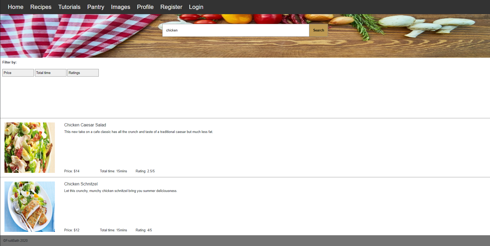
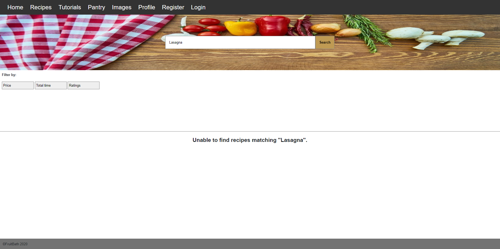
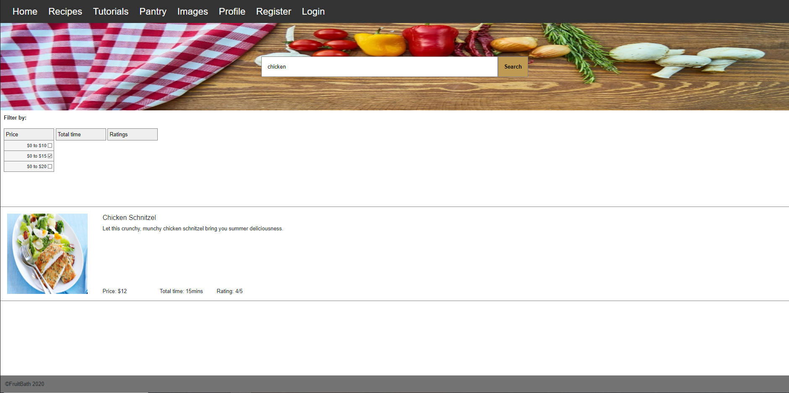

MVF: Search engine
Description
The search is implemented is a basic search engine that allows user to search for recipes base on keywords. In this case, keywords are main ingredients of recipes (e.g. keyword for chicken schnitz would be chicken). The filter would allow user to narrow down their search based on price, time, and ratings. Ajax, PHP, and a MySQL database were used for the backend coding, HTML and CSS was used for frontend.Outcome
The implementation of the search engine was successful. Entering any word in the search bar and clicking the search button will return a result. If there is recipes that matches what the user enter as well any filter, the result would be shown however if there if there is no match as message will display.
 the filter function were in a dropdown box ratheer then using a sidebar. When users click on a filter option the page will automactically update and will now show results matching the what the user type in the search box as well what filter were selected.
